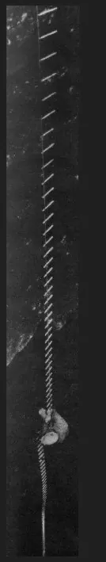

55 Yıl Önce Dünya

Bugün dünyanın en derin mağarası -2.191 m ile Krubera, en uzunu ise Mammoth Cave ve tam 627 km.55 yıl önce durum bambaşkaydı.
Gerçi, Flint Ridge ile Mammoth Cave arasındaki bağlantının keşfedilmesine daha 6 yıl vardı ama, 1966 yılında bu iki mağaranın bilinen toplam uzunluğu bile bugünkünün dörtte biri kadardı.
O yıl 85.200 m uzunluğuyla dünya mağara uzunluk rekoruna sahip olan Hölloch bugün 198.190 m ama klasmanda 8.liğe düştü. Eisriesenwelt’in ise bu kadar bile şansı olamadı. 42 km uzunlukta takılıp kalan Avusturya’nın bu meşhur, turistik buz mağarası bugün dünya klasmanında ancak 71. sırada.
1966 yılının mağara derinlik rekorlarına bakarken o yılların mağaracılarına haksızlık etmeyelim ve bu derinliklere merdivenlerle inildiğini unutmayalım. 1966 yılında henüz SRT keşfedilmemişti. -1000 m ilk olarak 1955 yılında Gouffre Berger’de geçildi. 24 Ağustos 1966 tarihinde ise üst girişinin keşfedilmesi sonucunda Pierre Saint-Martin Sistemi’nde yeni dünya rekoru kırıldı.
Bugün, Pierre Saint-Martin -1408 m derinliğiyle dünya klasmanında 17., Gouffre Berger ise -1323 m ile 23. sırada. 1966 yılında 3. olan Felix Trombe Sistemi -975 m’ye uzamasına karşın bugün 99. sırada! Spluga della Preta ise, aynen Eisriesenwelt gibi, -875 m’de kaldı ve artık 140.
1966 YILI DÜNYA KLASMANI
| Hölloch | Isviçre | 85,200 m |
| Flint Ridge | U.S.A. | 79,300 m |
| Mammoth Cave | U.S.A. | 74,300 m |
| Eisriesenwelt | Avusturya | 42,000 m |
| Ozernaja - Peschtschera | S.S.C.B. | 26,360 m |
| Trou du Glaz (Dent de Crolles) | Fransa | 25,000 m |
| Réseau Palomeras-Dolencias | İspanya | 24,796 m |
| Green Brier Caverns | U.S.A. | 24,300 m |
| Grotte d'Aggtelek | Macaristan | 23,000 m |
| Adelsberg | Yugoslavya | 23,000 m |
| Pierre Saint-Martin | Fransa - İspanya | -1171 m |
| Gouffre Berger | Fransa | -1135 m |
| Félix Trombe Sistemi | Fransa | -911 m |
| Spluga della Preta | Italya | -875 m |
| Antro di Gorcchia | Italya | -805 m |
| Grüberhornhöhle | Avusturya | -710 m |
| Caracas - Piagga Bella | Italya | -689 m |
| Abisso di Bifurto | Italya | -683 m |
| Gouffre de Caladaire | Fransa | -640 m |
| Grotte de Sniezna | Polonya | -640 m |